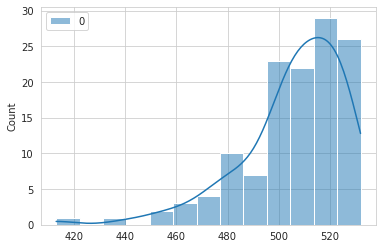
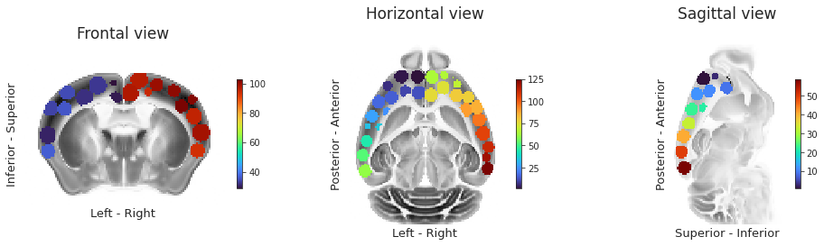

June 18th, 2021¶
Motivation: Clean up results a bit, 3d rendering: parcellation + 14 hierarchical clusters.
# HIDE CODE
import os
import sys
import ants
import nrrd
import collections
import numpy as np
import pandas as pd
import nibabel as nib
import networkx as nx
import operator as op
from pathlib import Path
from pprint import pprint
from copy import deepcopy as dc
from os.path import join as pjoin
from rich import print
from tqdm.notebook import tqdm
from myterial import orange, blue_grey
from matplotlib.colors import rgb2hex, to_rgb
import matplotlib.pyplot as plt
import seaborn as sns
sns.set_style('whitegrid')
# no interpolalation
import matplotlib
matplotlib.rcParams['image.interpolation'] = 'none'
# tmp & extras dir
tmp_dir = pjoin(os.environ['HOME'], 'Dropbox/git/jb-Ca-fMRI/tmp')
extras_dir = pjoin(os.environ['HOME'], 'Dropbox/git/jb-Ca-fMRI/_extras')
# GitHub
git_path = pjoin(os.environ['HOME'], 'Dropbox/git/Ca-fMRI/')
sys.path.insert(0, git_path)
from analysis.network import *
from utils.plotting import *
from model.mouse import Mice
# Allen
allen_ws = pjoin(os.environ['HOME'], 'Documents/workspaces/allen')
allen_path = pjoin(allen_ws, 'MouseConnectivity')
os.makedirs(allen_path, exist_ok=True)
from allensdk.core.mouse_connectivity_cache import MouseConnectivityCache
from allensdk.api.queries.ontologies_api import OntologiesApi
# atlas & spaces
from bg_atlasapi.bg_atlas import BrainGlobeAtlas
from bg_space import AnatomicalSpace
# warnings
import warnings
warnings.filterwarnings('ignore', category=DeprecationWarning)
# br & vedo (local)
br_path = pjoin(os.environ['HOME'], 'Dropbox/git/brainrender/')
vedo_path = pjoin(os.environ['HOME'], 'Dropbox/git/vedo/')
sys.path.insert(0, br_path)
sys.path.insert(0, vedo_path)
import brainrender
from brainrender import Scene
from brainrender import settings as br_settings
from brainrender.actors import Volume as br_Volume
import vedo
from vedo import Volume as vd_Volume
from vedo import settings as vd_settings
print(brainrender.__file__)
print(vedo.__file__)
/home/hadi/Dropbox/git/brainrender/brainrender/__init__.py
/home/hadi/Dropbox/git/vedo/vedo/__init__.py
# HIDE CODE
def trim_axs(axes, n):
axs = axes.flat
for ax in axs[n:]:
ax.remove()
return axs[:n]
def reset_ants_img(img: Union[np.ndarray, ants.ANTsImage], dtype=float, origin=0.0, spacing=1.0):
ndims = len(img.shape)
if isinstance(img, ants.ANTsImage):
img = img.numpy()
return ants.from_numpy(img.astype(dtype), origin=[origin]*ndims, spacing=[spacing]*ndims)
def add_children(graph: nx.DiGraph(), src_id: int, level: int, structure_tree):
src = structure_tree.get_structures_by_id([src_id])[0]
children = structure_tree.children([src_id])[0]
for child in children:
src_name = '\n'.join(src['name'].split(' '))
tgt_name = '\n'.join(child['name'].split(' '))
graph.add_node(tgt_name, lvl=level)
graph.add_edge(src_name, tgt_name)
return graph, children
def make_tree_graph(root: str, mcc: MouseConnectivityCache, n_levels: int = 3):
structure_tree = mcc.get_structure_tree()
structure = structure_tree.get_structures_by_name([root])[0]
g = nx.DiGraph()
g.add_node('\n'.join(structure['name'].split(' ')), lvl=0)
dend = {}
for lvl in range(n_levels):
if lvl == 0:
src_ids = [structure['id']]
else:
new_leaves = []
for i in src_ids:
g, children = add_children(
graph=g,
src_id=i,
level=lvl,
structure_tree=structure_tree,
)
for child in children:
new_leaves.append(child['id'])
src_ids = new_leaves
dend[lvl] = src_ids
return g, dend
def reorient_arr(x: np.ndarray, tr_axes: Tuple = (2, 1, 0)):
if len(x.shape) == 4:
tr_axes += (3,)
return np.transpose(x, tr_axes)[::-1]
def mask_left_right(mask: np.ndarray, left_right_axis: int = 2):
npix = mask.shape[left_right_axis]
coverage = int(np.ceil(npix/2))
slices_l = tuple(
slice(0, coverage) if i == left_right_axis else slice(mask.shape[i])
for i in range(len(mask.shape))
)
slices_r = tuple(
slice(npix-coverage, npix) if i == left_right_axis else slice(mask.shape[i])
for i in range(len(mask.shape))
)
mask_l = mask.copy().astype(bool)
mask_r = mask.copy().astype(bool)
mask_l[slices_r] = 0
mask_r[slices_l] = 0
return mask_l.astype(bool), mask_r.astype(bool)
from time import time
from sklearn.cluster import KMeans
import sklearnex
def kmeans_parcellation(
mask: np.ndarray,
num_regions: int = 256,
symmetrize: bool = False,
left_right_axis: int = 2,
random_state: int = 42, ):
sklearnex.patch_sklearn()
mask_l, mask_r = mask_left_right(mask, left_right_axis)
if symmetrize:
mask_r_full = mask_r.copy()
mask_l_full = mask_l.copy()
mask_r_full[slices_l] = np.flip(mask_r[slices_r], axis=left_right_axis)
mask_l_full[slices_r] = np.flip(mask_l[slices_l], axis=left_right_axis)
mask_sym = np.logical_and(mask_r_full, mask_l_full)
mask_l = mask_sym.copy().astype(bool)
mask_r = mask_sym.copy().astype(bool)
mask_l[slices_r] = 0
mask_r[slices_l] = 0
# do left
atlas_kmeans, cluster_centers = _do_kmeans(mask_l, num_regions, random_state)
# mirror symmetry clusters to right hemisphere
for region_id in np.unique(atlas_kmeans[atlas_kmeans > 0]):
region_id_r = region_id + num_regions
flipped = np.flip(atlas_kmeans[slices_l], axis=left_right_axis)
atlas_kmeans[slices_r][flipped == region_id] = region_id_r
# get center for right cluster
_ctr = cluster_centers[region_id].copy()
delta = npix/2 - _ctr[left_right_axis]
_ctr[left_right_axis] += 2*delta - 1
cluster_centers[region_id_r] = _ctr
else:
atlas_kmeans_l, cluster_centers_l = _do_kmeans(mask_l, num_regions, random_state)
atlas_kmeans_r, cluster_centers_r = _do_kmeans(mask_r, num_regions, random_state)
atlas_kmeans_r += num_regions
cluster_centers_r = {i+num_regions: ctr for i, ctr in cluster_centers_r.items()}
atlas_kmeans = atlas_kmeans_l.copy()
atlas_kmeans[mask_r] = atlas_kmeans_r[mask_r]
cluster_centers = {**cluster_centers_l, **cluster_centers_r}
sklearnex.unpatch_sklearn()
output = {
'atlas_kmeans': atlas_kmeans.astype(int),
'cluster_centers': cluster_centers,
'mask_l': mask_l.astype(bool),
'mask_r': mask_r.astype(bool),
}
return output
def _do_kmeans(x, num_regions, random_state):
nonzero_voxels = list(zip(*np.where(x.astype(bool))))
nonzero_voxels = np.reshape(nonzero_voxels, (-1, len(x.shape)))
nonzero_voxels = nonzero_voxels.astype(int)
kmeans = KMeans(
n_clusters=num_regions,
random_state=random_state,
).fit(nonzero_voxels.astype(float))
roi = kmeans.predict(nonzero_voxels.astype(float))
roi_unique = []
for lbl in roi:
if lbl not in roi_unique:
roi_unique.append(lbl)
mapping = {lbl: i+1 for i, lbl in enumerate(roi_unique)}
roi_relabeld = np.zeros_like(roi)
for lbl in roi_unique:
roi_relabeld[roi == lbl] = mapping[lbl]
atlas_kmeans_dict = defaultdict(list)
for voxel, lbl in zip(nonzero_voxels, roi_relabeld):
atlas_kmeans_dict[lbl].append(tuple(voxel))
atlas_kmeans_dict = dict(atlas_kmeans_dict)
atlas_kmeans = np.zeros(x.shape, dtype=int)
for region_id, voxel_list in atlas_kmeans_dict.items():
atlas_kmeans[tuple(zip(*voxel_list))] = region_id
cluster_centers = {mapping[lbl]: kmeans.cluster_centers_[lbl] for lbl in roi_unique}
return atlas_kmeans, cluster_centers
def translate_labels(labels: List[str], mcc: MouseConnectivityCache, forward: bool = True):
labels = list(labels) if not isinstance(labels, (list, tuple, dict)) else labels
structure_tree = mcc.get_structure_tree()
left_right = []
aux_ids = []
if forward:
structure_ids = []
for label in labels:
try:
lr, structure_id, aux_id = tuple(map(lambda x: int(x), label.split('-')))
except ValueError:
lr, structure_id = tuple(map(lambda x: int(x), label.split('-')))
aux_id = None
left_right.append('L' if lr == 0 else 'R')
structure_ids.append(structure_id)
aux_ids.append(aux_id)
structures = structure_tree.get_structures_by_id(structure_ids)
translated = [
'{:s}-{:s}'.format(lr, struct['name']) if aux_id is None else
'{:s}-{:s}-{:d}'.format(lr, struct['name'], aux_id)
for lr, struct, aux_id in zip(left_right, structures, aux_ids)
]
else:
structure_names = []
for label in labels:
try:
lr, structure_name, aux_id = label.split('-')
aux_id = int(aux_id)
except ValueError:
lr, structure_name = label.split('-')
aux_id = None
left_right.append(0 if lr == 'L' else 1)
structure_names.append(structure_name)
aux_ids.append(aux_id)
structures = structure_tree.get_structures_by_name(structure_names)
translated = [
'{:d}-{:d}'.format(lr, struct['id']) if aux_id is None else
'{:d}-{:d}-{:d}'.format(lr, struct['id'], aux_id)
for lr, struct, aux_id in zip(left_right, structures, aux_ids)
]
return translated
def load_allen(ws_dir: str, mode: str = 'MouseConnectivity', resolution: int = 100):
manifest_file = pjoin(ws_dir, mode, 'manifest.json')
mcc = MouseConnectivityCache(resolution=resolution, manifest_file=manifest_file)
structure_tree = mcc.get_structure_tree()
root = structure_tree.get_structures_by_name(['root'])[0]
cerebrum = structure_tree.get_structures_by_name(['Cerebrum'])[0]
isocortex = structure_tree.get_structures_by_name(['Isocortex'])[0]
template, template_info = mcc.get_template_volume()
annot, annot_info = mcc.get_annotation_volume()
root_mask, root_mask_info = mcc.get_structure_mask(root['id'])
cerebrum_mask, cerebrum_mask_info = mcc.get_structure_mask(cerebrum['id'])
isocortex_mask, isocortex_mask_info = mcc.get_structure_mask(isocortex['id'])
output = {
'manifest_file': manifest_file,
'mcc': mcc,
'structure_tree': structure_tree,
'root': root,
'cerebrum': cerebrum,
'isocortex': isocortex,
'template': template,
'template_info': template_info,
'annot': annot,
'annot_info': annot_info,
'root_mask': root_mask,
'root_mask_info': root_mask_info,
'cerebrum_mask': cerebrum_mask,
'cerebrum_mask_info': cerebrum_mask_info,
'isocortex_mask': isocortex_mask,
'isocortex_mask_info': isocortex_mask_info,
}
return output
def plot_parcellation(
parcellation: np.ndarray,
mask_l: np.ndarray,
mask_r: np.ndarray,
root_mask: np.ndarray,
figsize=(6, 4),
cmap='turbo', ):
sns.set_style('whitegrid')
fig, axes = plt.subplots(2, 3, figsize=figsize)
for i in range(2):
for j in range(3):
x = parcellation.copy()
if i == 0:
x[mask_r] = 0
label = 'left\n'
else:
x[mask_l] = 0
# x[x != 0] -= int(np.max(parcellation) // 2)
label = 'right\n'
if j == 0:
title = 'coronal'
elif j == 1:
title = 'axial'
else:
title = 'saggital'
data2plt = np.ma.masked_where(~root_mask.astype(bool), x)
axes[i, j].imshow(data2plt.mean(j), cmap=cmap)
list(map(lambda x: x.set_visible(False), axes[i, j].spines.values()))
axes[i, j].set_xticks([])
axes[i, j].set_yticks([])
if i == 0:
axes[i, j].set_title(title, fontsize=17, y=1.2)
else:
axes[i, j].set_title('')
if j == 0:
axes[i, j].set_ylabel(label, fontsize=17)
fig.tight_layout()
plt.show()
return fig, axes
def plot_registration(
fixed: np.ndarray,
moving: np.ndarray,
warped: np.ndarray,
figsize=(6, 8), ):
sns.set_style('white')
fig, axes = plt.subplots(3, 3, figsize=figsize)
for i in range(3):
for j in range(3):
if i == 0:
x = fixed.numpy()
label = 'fixed'
elif i == 1:
x = moving.numpy()
label = 'moving'
else:
x = warped.numpy()
label = 'warped'
if i == 0:
if j == 0:
top_title = 'axis = {:d}\n(coronal)'.format(j)
elif j == 1:
top_title = 'axis = {:d}\n(axial)'.format(j)
else:
top_title = 'axis = {:d}\n(saggital)'.format(j)
axes[i, j].set_title(top_title, y=1.1, fontsize=13)
if j == 0:
axes[i, j].set_ylabel(label + '\n', fontsize=13)
data2plt = x.mean(j)
axes[i, j].imshow(data2plt)
_ = list(map(lambda x: x.set_visible(False), axes[i, j].spines.values()))
axes[i, j].set_xticks([])
axes[i, j].set_yticks([])
msg = 'Plotting averaged data across different dimensions\n\n'
msg += '1st row (fixed): Average template, shape = {}\n'.format(fixed.shape)
msg += '2nd row (moving): Anatomical data, shape = {}\n'.format(moving.shape)
msg += '3rd row (warped): Anatomical data, shape = {}'.format(warped.shape)
plt.suptitle(msg, fontsize=14, y=1.02)
plt.tight_layout()
plt.show()
return fig, axes
Allen & Atlas¶
mice = Mice()
allen = load_allen(allen_ws)
src_space = AnatomicalSpace("lsa", shape=allen['template'].shape)
tgt_space = AnatomicalSpace("asl", shape=allen['template'].shape)
atlas = BrainGlobeAtlas("allen_mouse_100um")
atlas.space = tgt_space
atlas.space
allen mouse atlas (res. 100um)
From: http://www.brain-map.org (Wang et al 2020, https://doi.org/10.1016/j.cell.2020.04.007 )
<BGSpace AnatomicalSpace object> origin: ('Anterior', 'Superior', 'Left') sections: ('Frontal plane', 'Horizontal plane', 'Sagittal plane') shape: (132, 80, 114)
Compute ROIs¶
num_regions = 64
parcellation = kmeans_parcellation(
mask=allen['isocortex_mask'],
num_regions=num_regions,
symmetrize=False,
left_right_axis=2,
)
Intel(R) oneAPI Data Analytics Library solvers for sklearn enabled: https://intelpython.github.io/daal4py/sklearn.html
atlas_kmeans_eroded = np.zeros_like(parcellation['atlas_kmeans'])
radius = 5
for region_id, ctr in parcellation['cluster_centers'].items():
for voxel in list(zip(*np.where(parcellation['atlas_kmeans'] == region_id))):
dist = np.linalg.norm(ctr - voxel)
if dist < radius:
atlas_kmeans_eroded[voxel] = region_id
# report
x = atlas_kmeans_eroded.copy().astype(float)
num_region_voxels = {}
for region_id in np.unique(x[x > 0]):
num_region_voxels[region_id] = (x == region_id).sum()
sns.set_style('whitegrid')
sns.histplot(num_region_voxels.values(), kde=True)
plt.show()

selected_names = [
'Striatum',
'Pallidum',
'Olfactory areas',
'Cortical subplate',
'Hippocampal formation',
'Isocortex',
]
root_mask_l, root_mask_r = mask_left_right(allen['root_mask'])
selected_structures = allen['structure_tree'].get_structures_by_name(selected_names)
roi_masks = {}
for structure_dict in selected_structures:
print('id: {:d},\tname: {:s}'.format(structure_dict['id'], structure_dict['name']))
if structure_dict['name'] == 'Isocortex':
for region_id_l in range(1, num_regions+1):
region_id_r = region_id_l + num_regions
_mask_l = atlas_kmeans_eroded == region_id_l
_mask_r = atlas_kmeans_eroded == region_id_r
roi_masks['0-{:d}-{:d}'.format(structure_dict['id'], region_id_l)] = _mask_l.astype(bool)
roi_masks['1-{:d}-{:d}'.format(structure_dict['id'], region_id_r)] = _mask_r.astype(bool)
else:
_mask = allen['mcc'].get_structure_mask(structure_dict['id'])[0]
_mask_l = np.logical_and(_mask, root_mask_l)
_mask_r = np.logical_and(_mask, root_mask_r)
roi_masks['0-{:d}'.format(structure_dict['id'])] = _mask_l.astype(bool)
roi_masks['1-{:d}'.format(structure_dict['id'])] = _mask_r.astype(bool)
id: 477, name: Striatum
id: 803, name: Pallidum
id: 698, name: Olfactory areas
id: 703, name: Cortical subplate
id: 1089, name: Hippocampal formation
id: 315, name: Isocortex
fig, axes = create_figure(1, 3, figsize=(13, 3.9))
slice_idxs = [58, 30, 44]
for i, (ax, plane, labels) in enumerate(zip(axes, atlas.space.sections, atlas.space.axis_labels)):
data2plt = atlas_kmeans_eroded.take(slice_idxs[i], axis=i)
data2plt = np.ma.masked_where(data2plt == 0, data2plt)
ax.imshow(atlas.reference.take(slice_idxs[i], axis=i), cmap='Greys')
im = ax.imshow(data2plt, cmap='turbo')
plt.colorbar(im, ax=ax, shrink=0.6)
ax.set_title(f"{plane.capitalize()} view\n", fontsize=17)
ax.set_ylabel(labels[0], fontsize=13)
ax.set_xlabel(labels[1], fontsize=13)
_ = list(map(lambda x: x.set_visible(False), ax.spines.values()))
ax.set_xticks([])
ax.set_yticks([])
fig.tight_layout()
plt.show()

Custom colors?¶
_ = make_cmap(['#1d91c0', '#e7298a'])
ramp_colors = ['#084594', '#1d91c0', '#7fcdbb', '#68ad45', '#ec7014', '#fee391', '#e7298a', '#7a0177']
n_colors = num_regions * 2
custom_cmap = make_cmap(
ramp_colors=ramp_colors,
name='parcellation',
n_colors=n_colors,
)
Render cortical ROIs¶
# use palette to color regions
palette = sns.color_palette('nipy_spectral', n_colors=17)
palette
br_settings.ROOT_ALPHA = 0.2
br_settings.RENDER = False
scene = Scene(atlas_name="allen_mouse_100um", root=True, inset=True)
scene.atlas.space = tgt_space
scene.add_brain_region('Isocortex', alpha=0.4, color=list(sns.color_palette('Greys', n_colors=10))[-2])
palette = sns.color_palette('nipy_spectral', n_colors=len(parcellation['cluster_centers']))
names, surfaces, colors = [], [], []
for idx, (region_id, ctr) in enumerate(parcellation['cluster_centers'].items()):
x = atlas_kmeans_eroded == region_id
x = src_space.map_stack_to(tgt_space, x)
# c = custom_ramp(idx/num_regions/2)[:3]
# colors.append(c)
vol = vd_Volume(x.astype('uint8'), spacing=[100]*3).medianSmooth()
surf = vol.isosurface().alpha(0.2).lw(0).c(rgb2hex(list(palette)[idx]))
surf.smoothWSinc().computeNormals().lighting('metallic').phong().decimate().clean()
surfaces.append(surf)
names.append('region_{:d}'.format(region_id))
scene.add(*surfaces, names=names, colors=list(palette))# colors) # list(palette))
scene.add_silhouette(*scene.actors, lw=0.7, color='k')
br_settings.ROOT_ALPHA = 0.1
br_settings.RENDER = True
path = scene.export(pjoin(extras_dir, f"parcel{num_regions}.html"))
scene.plotter.close()
Scene saved at /home/hadi/Dropbox/git/jb-Ca-fMRI/_extras/parcel64.html
Embed result¶
from IPython.display import IFrame
path = f"../../_extras/parcel{num_regions}.html"
display(IFrame(path, width=1000, height=700))
n_clusters = 14
path = f"../../_extras/comms3d_64_canberra{n_clusters}.html"
display(IFrame(path, width=1000, height=700))